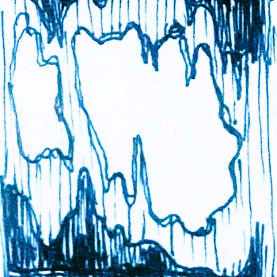

The door opens onto a small platform in a very, very dark room. The sound of water is at its heaviest here, little dripping noises and echoing. Running my flashlight along the room I realize that it is not a room but in fact a cavern, one that slopes deep downward, a big scar in the earth. I walk to the edge of the platform and let my legs drop from it, sitting down. The rock is an almost fleshy pale tan color splitting out from dark craggy stone. It’s not worth the risk to climb down. As I leave, I swear I see something in the dark as I turn my flashlight back to the door.